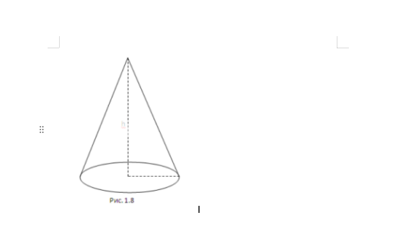

1. Лазерный принтер — устройство для печати текстов и графических изображений на бумаге с помощью метода ксерографии. Назначение Лазерный принтер предназначен для создания отпечатков, которые устойчивы к влаге, истиранию и выцветанию. Применение Принтеры используют в разных сферах, например: Офисная печать — печать документов, таблиц, чертежей. Домашнее использование — печать рефератов, курсовых, дипломных работ, а также цветных изображений (в некоторых моделях). Однако лазерные принтеры не подходят для цветной фотопечати из-за низкого разрешения. Принцип работы Процесс печати в лазерном принтере включает несколько этапов: Заряд фотобарабана. Барабан вращается в противоположном направлении от ролика заряда и получает отрицательный потенциал. Экспонирование изображения на фотобарабане. Лазерный луч проходит по поверхности барабана по заранее заданной программе, снимает в местах соприкосновения отрицательный заряд, делая его нейтральным. Проявка изображения. Частицы тонера «прилипают» к шаблону будущего изображения на поверхности барабана. Перенос изображения на бумагу. Лист бумаги проходит между барабаном и роликом переноса. Когда ролик соприкасается с бумагой, изображение переносится на её поверхность: ролик имеет положительный заряд, и все отрицательные частицы тонера остаются на бумаге. Закрепление на бумаге. Бумага протягивается между двумя валами: прижимным и нагревательным. Под воздействием высокой температуры тонер плавится и закрепляется на поверхности листа. Очистка. На поверхности фотобарабана остаются неиспользованные частицы тонера. Для их удаления предусмотрена специальная деталь — ракель
2.
3.
| Продукт | Масса, кг |
|---|---|
| Капуста | 30 |
| Морковь | 20 |
| Яблоки | 10 |
| Овес | 25 |